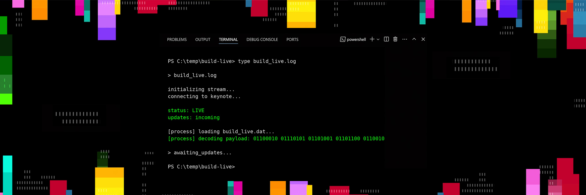

Executive Summary
On June 2, 2026, on the Build 2026 stage, Microsoft introduced its first reasoning model, MAI-Thinking-1, as trained on "an enterprise-grade, clean, and commercially licensed data lineage." The message was aimed squarely at buyers who care about where data comes from: finance, healthcare, government. Yet the technical report published the same day listed 1.2 trillion pages of in-house web crawl and Common Crawl, the open web archive, among its training sources. This article looks at why that gap is not a performance problem but a question of provenance.
The first person to name the contradiction was developer Simon Willison. He pointed out that the training data described in the technical report ultimately amounts to "a crawl of the public web," carrying the same licensing problems as every other large model, and The Decoder independently confirmed the reading. A week passed without an official explanation from Microsoft. When the adjectives in a keynote diverge from the facts in a footnote, what breaks is not the model's score but the promise behind it: can you prove where this data came from?
This article reconstructs the timeline, explains why Common Crawl is hard to reconcile with the word "licensed," and walks through what corporate procurement and legal teams should put in a contract in 2026, as EU AI Act enforcement approaches. The aim is to mark, alongside the reader, the point where data provenance moves from a marketing line to an auditable compliance asset.
Key Figures
Four numbers compress this episode. 24.2 billion and 794 billion are the real scale of what the keynote called "licensed." 70%+ is the share of such data that the industry has lost track of, and August 2, 2026 is the date legal liability starts attaching to that gap. The distance between a single marketing adjective and a verifiable record is exactly what these figures measure.
Sources: MAI-Thinking-1 technical report, Simon Willison, Data Provenance Initiative
24.2B
Common Crawl pages
An open web archive that guarantees no license was folded into training
794B
In-house crawl pages
What remained of 1.2 trillion pages after filtering — still a public web crawl
70%+
Datasets missing a license
The provenance gap exposed in an audit of 1,800 datasets
2026.08.02
EU AI Act enforcement
The duty to document training-data provenance for general-purpose AI begins
The Keynote Promise
When CEO Mustafa Suleyman introduced MAI-Thinking-1 in the Build 2026 keynote, what he emphasized was not benchmark scores. He said the model had been trained on "a trusted, enterprise-grade, clean, and commercially licensed data lineage." It was a declaration that the model did not lean on data of murky license or opaque origin, and the stage screen carried the branding line "Capabilities Learned, Not Inherited."
The audience for this message was clear: the people who weigh legal risk before they turn to the performance table — the legal and procurement teams at financial, healthcare, and government institutions. For them, "clean data" is less a marketing adjective than a warranty clause that has to be transcribed into a contract. Suleyman's announcement was an attempt to position the model not as "smarter" but as "auditable."

1.1What Kind of Model Is MAI-Thinking-1
The model's own specifications set the weight of the promise in context. MAI-Thinking-1 uses a Sparse Mixture-of-Experts architecture, with roughly 1 trillion total parameters and about 35 billion activated at inference. Its context window reaches 256,000 tokens, and it shipped as a private preview on Azure AI Foundry. It signaled Microsoft's intent to stop leaning on outside models and put its own reasoning model directly in front of regulated industries.
Same Day, Different Story
The technical report released the same day, after the keynote ended, told a different story. There, the training data was defined as "a mixture of publicly available and licensed human-generated data," with concrete figures attached. The in-house web crawl started at 1.2 trillion pages and, after filtering, left 794 billion. To that, 24.2 billion pages drawn from the nonprofit web archive Common Crawl were added.

The problem lives in the phrase "publicly available" inside that definition. The fact that anyone can download something from the open web and the fact that the right to use that content for model training has been secured through a license are entirely different layers of claim. Where the keynote led with "licensed," the report quietly slipped in "publicly available."
Developer Simon Willison was the first to name the gap. On his blog he concluded that the MAI models, having ultimately been "trained on a crawl of the public web," carry "the exact same licensing problems as every other major large language model." The tech outlet The Decoder independently confirmed the analysis, but Microsoft had still offered no official position past June 5.
Within a single day, one company used two different languages for the same data. On stage stood the adjective "clean and licensed"; inside the report sat the fact "publicly available." Which of the two survives into a contract is the real substance of this episode.
The Gap in Common Crawl
Common Crawl is a California nonprofit founded in 2008 that regularly crawls the open internet and makes the resulting archive free for anyone to use. It is the most common way researchers and startups get their hands on text at scale, but it has one decisive limit: Common Crawl guarantees no usage rights over the content it collects.
Inside the archive sit works by news publishers, writers, and creators who never agreed to their use in training. That is why "we used Common Crawl" and "we used commercially licensed data" cannot both be true of the same model. The former means the source is open; the latter means the rights have been cleared.
3.1A Landscape of Mounting Lawsuits
This gap is no longer an abstract worry; it is becoming courtroom evidence. In May 2026, Anthropic reached a $150 million copyright settlement with a group of authors, and Meta was sued by five major publishers over allegations that it used pirated books to train Llama. Corporate legal teams began reviewing AI vendors' training-data provenance in earnest from early 2026 as well. The DeepSeek R1 controversy — allegations that it distilled the outputs of another model — accelerated that shift. Once what a model learned became a boardroom item, "we took it from the public web" stopped being a safe place to stand.
3.2Datasets With an Empty Origin
The Data Provenance Initiative, led by MIT professor Sandy Pentland and others, audited more than 1,800 text datasets. The result shows Microsoft's case is no exception. On popular dataset-hosting sites, the share with license information entirely missing topped 70%, and the share mislabeled exceeded 50%. Tracing origin is, before it is a question of will, a question of infrastructure: often there is simply no information left to trace.
The Age of Audited Provenance
Regulation is moving fast to fill this gap. The EU AI Act requires providers of general-purpose AI (GPAI) to maintain a training-data summary, copyright-compliance information, and a content-provenance mechanism as documentation. The transparency obligations took effect in August 2025, and enforcement begins on August 2, 2026. Penalties for violations reach up to €10 million or 2% of annual turnover. A date on which keynote adjectives no longer suffice is, in effect, pinned to the calendar.
On the U.S. side, NIST named data provenance and lineage as safety-critical artifacts in AI 600-1, its document on generative-AI risk. The recommendation is to document the origin of data, its transformation history, and its quality assessment. The regulatory language differs, but the direction of the demand converges on one thing: show what the model learned not as a claim but as a verifiable record.
4.1The Ground Is Not Ready Yet
The obligations are arriving, but readiness on the ground falls short. According to 2026 surveys, 78% of organizations cannot validate data before it enters the training pipeline, and 77% cannot trace the origin of their training data. The share unable to recover their training data after an incident reaches 53%. The distance between the demand to prove origin and the reality of not knowing it is the real backdrop to this episode.
4.2Four Things to Put in the Contract
So the side buying an AI model has to move the keynote's sentences into contract clauses and verify them. The items a corporate legal team should confirm at the negotiating table come down roughly to the following.
- • Codify the vendor's stated position on data provenance as a contractual warranty. Keynote remarks carry no legal force.
- • Include an IP indemnification clause that covers downstream fine-tuning as well.
- • Spell out an obligation to provide, on request, evidence proving the scope of licensing.
- • Agree on a documentation standard for how exception data is recorded and handled.
The Questions This Leaves
What stands out most in Microsoft's case is not a lie but a governance vacuum. Between the keynote's marketing language and the technical report's facts lay a gray zone that no one owned, and a single outside developer filled it. That a blog post, rather than the company's official channel, became the source of the truth says everything about the industry's current verification structure.
The "fair use" defense keeps narrowing, too. As settlements and lawsuits pile up, the bare fact of having crawled the public web no longer makes it easy to claim the rights are cleared. Trust, once shaken, is not restored by a fancier adjective. The only way back is an independently auditable record.
Some have set their course early. Databricks made "a fully auditable training dataset" the differentiator for its DBRX model — a strategy that sells lineage, not performance, as the edge. The MAI episode proves, in reverse, why that choice is becoming the rational one.
When Quality Becomes an Asset
For the past few years, the criteria for choosing an AI model have been bound to benchmark scores. The MAI episode shows that baseline moving. The question finance, healthcare, and public-procurement teams have started to ask is not "how smart is this model" but "can you prove where this model's training data came from." Data quality and provenance are no longer a marketing line; they are turning into an asset that gets audited and written into a contract.
The genuinely hard part of this shift is not building a good model but keeping records so you can later prove the data you used. The ability to retain, in a traceable form, which data came from where, under what rights it entered, and which filters it passed through. This is the new fundamental that a 2026 data infrastructure has to possess.
Editor's Note. Pebblous has made inspecting the origin, quality, and lineage of data its core work. The question behind AI-Ready Data and DataClinic comes down to the same thing: is your data ready to be audited later? If the MAI episode looks like a problem only for big companies, change one variable and ask again — when someone asks where our data came from six months from now, can we answer?
References
Industry & Press
- 1.Willison, S. (2026). "Microsoft's new MAI models." Simon Willison's Weblog.
- 2.The Decoder. (2026). "Microsoft trained its MAI models on unlicensed web data despite promising "enterprise grade, clean and commercially licensed data"." The Decoder.
- 3.Tech Times. (2026). "Microsoft MAI Training Data Includes Common Crawl, Contradicting Build 2026 Claims." Tech Times.
- 4.Windows News AI. (2026). "Microsoft MAI-Thinking-1: Clean Licensed Data Claims Clash With Common Crawl." Windows News AI.
- 5.ComplexDiscovery. (2026). "Microsoft's first reasoning model arrives with a provenance pitch aimed at compliance teams." ComplexDiscovery.
- 6.MLQ.ai. (2026). "Microsoft trained MAI models on Common Crawl data despite marketing clean licensed training pipeline." MLQ.ai.
Academic
- 7.Longpre, S. et al. (Data Provenance Initiative). (2024). "A large-scale audit of dataset licensing and attribution in AI." Nature Machine Intelligence.
Official Documents & Resources
- 8.Data Provenance Initiative. "The Data Provenance Initiative." dataprovenance.org.
- 9.Scalevise. (2026). "EU AI Act 2026: New Rules for Training Data and Copyright." Scalevise Resources.